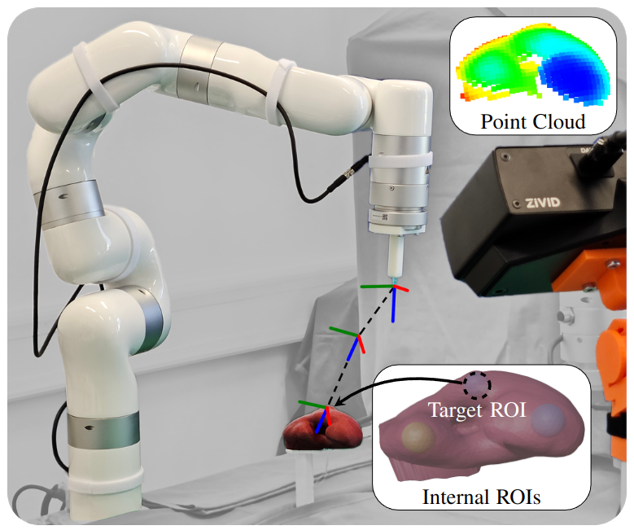
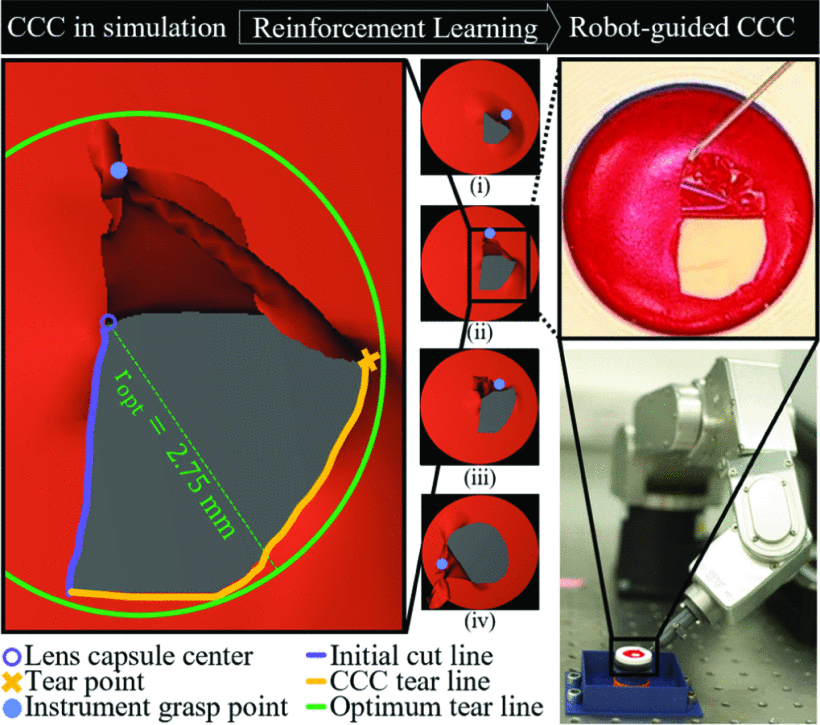
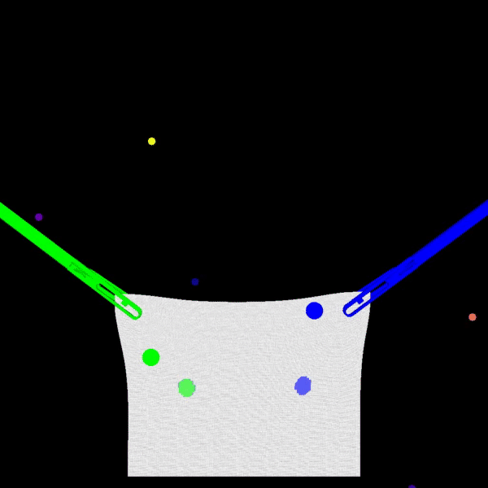
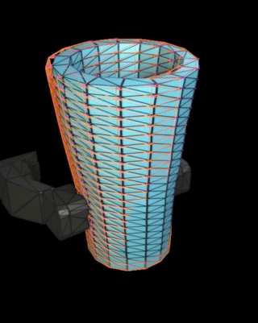
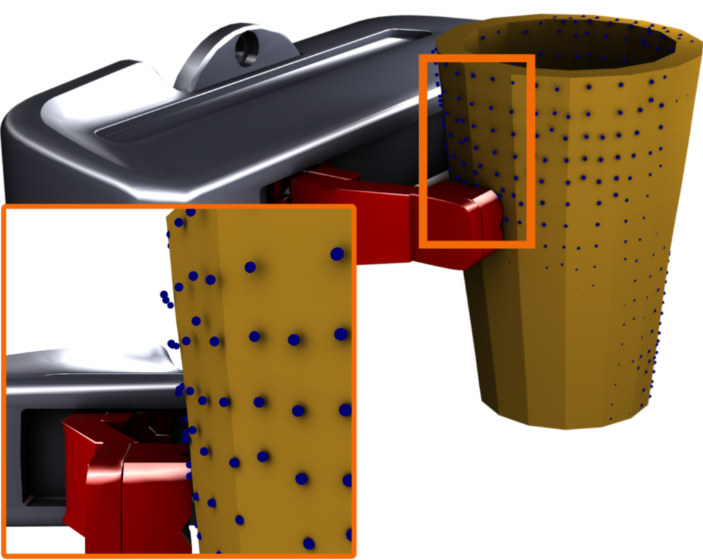

|
Paul Maria Scheikl I am a postdoc at Johns Hopkins University working under the guidance of Axel Krieger in the Laboratory for Computational Sensing and Robotics (LCSR). |

|
ResearchMy research interests lie at the intersection of robotics, computer vision, and machine learning. I am particularly interested in developing algorithms for robot-assisted surgery, focusing on deformable object manipulation. During my doctoral studies under the guidance of Franziska Mathis-Ullrich at the Friedrich-Alexander-University Erlangen-Nürnberg in Germany, I worked on imitation learning, reinforcement learnig, semantic segmentation, deformable object simulation, and sim-to-real transfer. |
|

|
LUDO: Low-Latency Understanding of Highly Deformable Objects using Point Cloud Occupancy Functions
Pit Henrich, Franziska Mathis-Ullrich, Paul Maria Scheikl Under Review, 2024 Reconstructs a complete deformable object, including deformed internal structures, from a single point cloud observation. We use the reconstructed object to plan a robotic path to puncture internal regions of interest. Deformable object reconstruction eliminates the need for deformable object registration! |
|

|
Lens Capsule Tearing in Cataract Surgery using Reinforcement Learning
Rebekka Charlotte Peter, Steffen Peikert, Ludwig Haide, Doan Xuan Viet Pham, Tahar Chettaoui, Eleonora Tagliabue, Paul Maria Scheikl, Johannes Fauser, Matthias Hillenbrand, Gerhard Neumann, Franziska Mathis-Ullrich IEEE International Conference on Robotics and Automation (ICRA), 2024 Demonstrates simulation and policy learning of lens capsule tearing in cataract surgery using reinforcement learning. |
|

|
Movement Primitive Diffusion: Learning Gentle Robotic Manipulation of Deformable Objects
Paul Maria Scheikl, Nicolas Schreiber, Christoph Haas, Niklas Freymuth, Gerhard Neumann, Rudolf Lioutikov, Franziska Mathis-Ullrich. IEEE Robotics and Automation Letters (RA-L), 2024 code / website Combines the versatility of diffusion-based imitation learning with the high-quality motion generation capabilities of Probabilistic Dynamic Movement Primitives. Achieves gentle manipulation of deformable objects, while maintaining data efficiency critical for surgical applications where demonstration data is scarce. Evaluated in simulation and on real robotic hardware. |

|
Registered and Segmented Deformable Object Reconstruction From a Single View Point Cloud
Pit Henrich, Balázs Gyenes, Paul Maria Scheikl, Gerhard Neumann, Franziska Mathis-Ullrich. IEEE/CVF Winter Conference on Applications of Computer Vision (WACV), 2024 3D reconstruction and segmentation of deformable objects from a single view point cloud. Also introduces a simple sampling algorithm to generate better training data for occupancy learning. |

|
LapGym - An Open Source Framework for Reinforcement Learning in Robot-Assisted Laparoscopic Surgery
Paul Maria Scheikl, Balázs Gyenes, Rayan Younis, Christoph Haas, Gerhard Neumann, Martin Wagner, Franziska Mathis-Ullrich. Journal of Machine Learning Research (JMLR), 2023 code: lap_gym / sofa_env Reinforcement learning framework for robot-assisted laparoscopic surgery. Builds on the open-source, fast, interactive FEM simulation backend SOFA. Deformable object manipulation, topological changes (cutting), grasping, image observation modalities (RGB, depth, segmentation, point clouds). |
|


|
Grounding Graph Network Simulators using Physical Sensor Observations
Jonas Linkerhägner, Niklas Freymuth, Paul Maria Scheikl, Franziska Mathis-Ullrich, Gerhard Neumann. International Conference on Learning Representations (ICLR), 2023 Integrate sensory information to ground Graph Network Simulators on real world observations. Predict the mesh state of deformable objects by utilizing point cloud data. |

|
Sim-to-Real Transfer for Visual Reinforcement Learning of Deformable Object Manipulation for Robot-Assisted Surgery
Paul Maria Scheikl, Eleonora Tagliabue, Balázs Gyenes, Martin Wagner, Diego Dall'Alba, Paolo Fiorini, Franziska Mathis-Ullrich. IEEE Robotics and Automation Letters (RA-L), 2022 Training a visumotor policy for deformable object manipulation in simulation with reinforcement learning. Transferring the policy to the real world with the daVinci Research Kit using unpaired image-to-image translation. |

|
Cooperative assistance in robotic surgery through multi-agent reinforcement learning
Paul Maria Scheikl, Balázs Gyenes, Tornike Davitashvili, Rayan Younis, André Schulze, Beat P Müller-Stich, Gerhard Neumann, Martin Wagner, Franziska Mathis-Ullrich. IEEE/RSJ International Conference on Intelligent Robots and Systems (IROS), 2021 Learns decentralized policies without a human in the loop with multi-agent reinforcement learning. Evaluates the learned policies in cooperation with a human surgeon for deformable object manipulation. |

|
Deep learning for semantic segmentation of organs and tissues in laparoscopic surgery
Paul Maria Scheikl, Stefan Laschewski, Anna Kisilenko, Tornike Davitashvili, Benjamin Müller, Manuela Capek, Beat P Müller-Stich, Martin Wagner, Franziska Mathis-Ullrich. Current Directions in Biomedical Engineering (CDBE), 2020 Evaluates several architectures and training strategies for semantic segmentation of organs and tissues in laparoscopic surgery. |